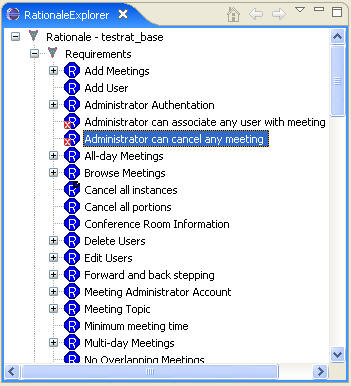
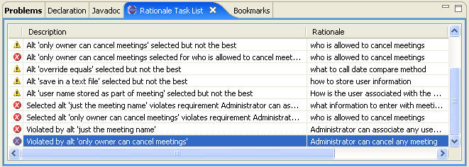
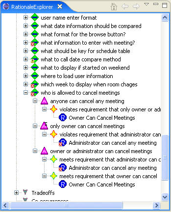
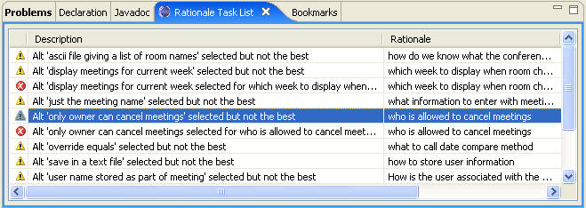

When the requirement “Administrator can cancel any meeting” is enabled, it shows up as having been violated in two places in SEURAT. The requirement itself, as shown in the Rationale Explorer in the following figure, has an error icon over it.

There is also an error message on the Rationale Task Display shown in the following figure.

When the maintainer looks at the decision list in SEURAT, there are several that have error icons on them. One is the decision “who is allowed to cancel meetings” shown the following figure. This has three alternatives, only one of which does not violate any requirements. That alternative is “owner or administrator can cancel meetings.”

The maintainer then needs to find the place in the code that checks if the meeting can be cancelled or not. This can be done the most quickly using the Bookmarks Display. The following figure shows the Bookmarks Display with the alternative “only owner can cancel meetings” highlighted. When double-clicked, the editor comes up with the appropriate code. When done with the changes, the maintainer needs to update the rationale so that the correct alternative is selected and the code associations are also correct.
